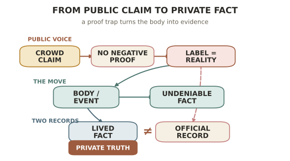

三 · 存在的证明
《黄金时代》是王小波流传最广的作品，也是被读得最平的一部。通行的读法在两极之间摆动：一极把它当性的书写，一极把它当对禁欲年代的反抗、当性解放。这两种读法都不算错，却都停在了性上。我想把它往里推一层：这部小说里的性，与其说是欲望或解放，不如说是一个人在一个由众口决定现实的世界里，为自己的存在与清白寻找一个不容辩驳的证据。这是我的读法，下面用小说自身来支撑它。
一、破鞋的逻辑
小说的引擎，是开篇那段著名而古怪的推理。陈清扬来找王二，是要他证明她不是破鞋——因为队上人人都说她是，尽管她什么也没做。王二的回答带着数学式的冷酷：正因为大家都说她是，而她又拿不出证据证明自己不是，她索性就是好了。于是两人真的开始了他所谓的"敦伟大友谊"。
这段推理值得慢下来看。它揭穿了那个世界的一条隐秘法则：现实不由事实决定，而由众口决定。你是不是破鞋，不取决于你做过什么，取决于大家怎么说。一个人被抛进这样的处境——她的清白无法自证，因为清白是"没做过某事"，而你没法为一件没发生的事拿出证据。这正是上一章说的"确信"的暴力：集体的断言凭空造出了一个现实，而个人在它面前无从申辩。
王二那句"你就是破鞋好了"，表面荒唐，实则点破了困境的死结：既然清白无法证明，那就干脆去做一件确实发生过的事。这就把我们引向了性。
二、身体是唯一无法被抵赖的事实
在一个话语可以随意判定现实的世界里，什么东西最结实、最无法被众口改写？是身体，是确实发生过的、有重量的行为。你可以说一个人是破鞋而她无从辩驳，但两个身体之间真实发生过的事，是一个谁也抹不掉的事实。
所以《黄金时代》里的性，我以为其要害不在快感，也不主要在反抗禁欲，而在它的不可抵赖。它是王二和陈清扬在一个虚浮的、由标语和批斗构成的世界里，为自己抓住的一小块坚实的实在——一个"这件事确实发生了、确实是我们的"的证据。性在这里近乎一种存在的确证：我以身体证明，我确实活着，确实在此。 这也是为什么这部写性的小说读来并不轻佻，反而有一种奇异的庄重——它写的是一个人如何在虚无里为自己钉下一个不动的点。

三、交代：活过的事实与被登记的版本
小说的后半转向"交代"。两人的事发了，他们被要求一遍遍写交代材料，把发生过的一切供出来。王二渐渐看出一件荒诞的事：那些写给权力看的交代，被当作某种隐秘的读物消费着——审查者想要的，其实是那个"故事"。
这里出现了贯穿他全部作品的一个对立：活过的事实，与被登记的版本。真实发生的事是一回事；被要求写下来、交上去、供人审读的那个官方版本，是另一回事。交代要的是一个可供处置的文本，而不是那段生活本身。权力不满足于发生了什么，它要占有对"发生了什么"的叙述权——这与上一章《花剌子模信使问题》里权力对真相的摆布，是同一件事在私人层面的显影。
而全书最动人的一笔，正落在这条裂缝上。到最后，陈清扬承认，有一件她从不肯写进任何交代的事：她爱他。这是她真正的秘密，是唯一属于她自己、不肯交出去的东西。那个不被写下的事实，才是真的；写下来交上去的一切，都是给权力的赝品。 一个人能守住的最后自由，是让某个真相永远留在交代之外。
四、为什么叫"黄金时代"
于是可以回答那个题目了。王二把二十一岁称作自己的黄金时代，通行的理解是青春、是生命力。这不错，但可以更准一点：所谓黄金时代，是他觉得自己怎么也压不垮、能一直活下去、想爱谁就爱谁的那种状态——是一种在四周的荒诞面前依然鲜活、依然确信自己存在的能力。
黄金时代不是没有苦难的时代，恰恰相反，它被苦难包围。它之所以是黄金的，是因为在那样的包围里，一个人仍然旺盛地存在着，仍然能抓住身体、抓住爱、抓住那些不容抵赖的事实，来证明自己没有被抹平。把这部小说读成这样一个关于"如何保持存在"的故事，它就和第一章的理科头脑、第二章的怀疑者接上了：这是同一个人，在虚浮的世界里，执着地寻找结实的、真的、属于自己的东西。
五、余论：为什么这读法不是拔高
有人会担心，把性读成"存在的证明"是不是给它强加了哲学。我的辩护是：这读法恰恰让小说的每一处都各归其位——破鞋逻辑不再只是噱头，而是困境的设定；性不再只是大胆，而是对治困境的方式；交代不再只是情节，而是对立的核心；连题目都因此落到了实处。一个好的读法应当让作品的各部分互相说话，而不是替它们发言。至于王小波本人是否"想到了这一层"，那是另一个问题——好的作品往往懂得比作者自觉的更多。
三部长篇的第一部到此。它写的是如何抓住实在。下一部走向反面：一个把一切实在都抹平了的世界——他最难读、也最少被善待的《白银时代》。
下一章：无趣的恐惧——《白银时代》《未来世界》。他笔下最深的恐怖不是暴力，而是单调；他借小说里的"热寂"一词，写一个可能性被彻底抹平的世界。